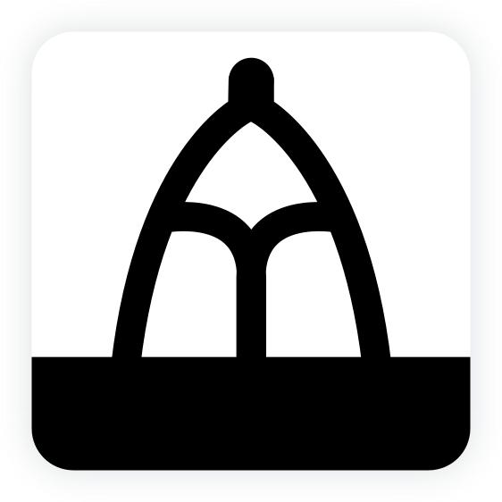

-
CIGMAH Web Apps
-
All tools we make are free and open-source - feel free to fork us on GitHub. Let us know if you have any questions or feedback, or would be keen to join the development team! :)
-
AORTA aorta.cigmah.org
STATUS: EARLY
An Open Revision Tool for Assessments: Free, communal EMQs and notes linked to specific medical learning objectives. More info.
-

AICA aica.cigmah.org
STATUS: VERY EARLY
An Interactive Case Archive: Interactive, chatbot-interface medical cases. More info.
AORTA
An Open Revision Tool for Assessments
It's important to learn actively - processing information and making your own decisions based on the knowledge you have. Practice questions are one way of incorporating active learning into your studies. Questions force you to use what you've learned to provide a focused and relevant solution to problems.
However, it can be time-consuming to create your own questions. Often, it's great to try answering questions you've never encountered before so you can learn from them by making new mistakes.
We therefore hope AORTA can be an open-source, freely available repository of questions for medical students. There's a system for making notes and questions based on learning objectives for our medical course, and a system for generating random tests of contributed questions.
We're still working on it, so please bear with us as we get content up and running. We'd always love more help so get in contact if you're keen to give us a hand from the medical or technical side!
AICA
An Interactive Case Archive
It's important to put medical learning into context by seeing and helping patients. It's always best to do this in real life, but sometimes you may want to revise patient-based care whilst at home.
We therefore hope that AICA can help you practise thinking through patient-based care when you may not have access to the clinics. AICA is an interactive set of cases which let you converse with and examine simulated patients through a chat-like interface. Afterwards, you're asked to write a medical note, provide a provisional diagnosis, order appropriate investigations and prescribe any immediate management - like you might do at a standard clinic visit.
We hope this interface will help you practise your clinical reasoning skills and in determining what questions and examinations are relevant during a consultation. We also hope you can practise fine-tuning your differentials, writing concise clinical notes and formulating basic management plans for patients you see in the clinics.
We'd always love some help to write cases or improve the interface, so let us know if you're keen to help out!